Campaign Overview
01 / 12
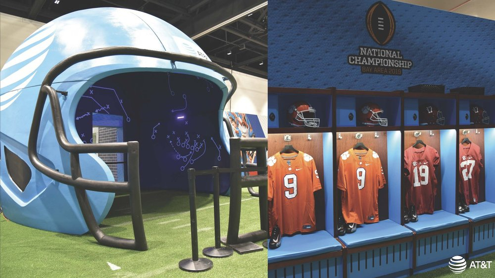
Fan Experience
02 / 12
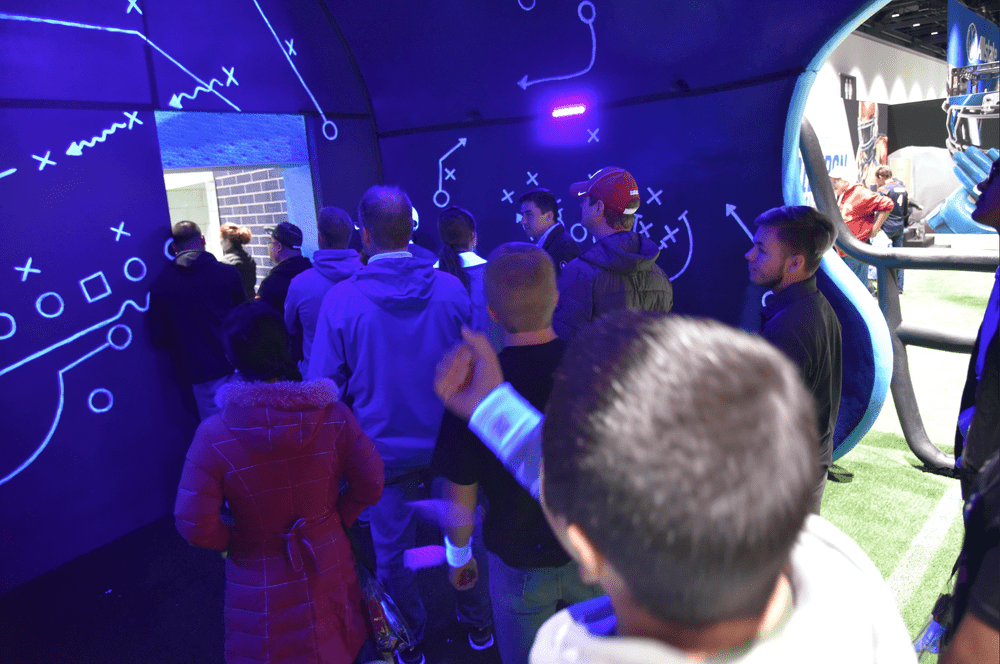
Brand Identity
03 / 12
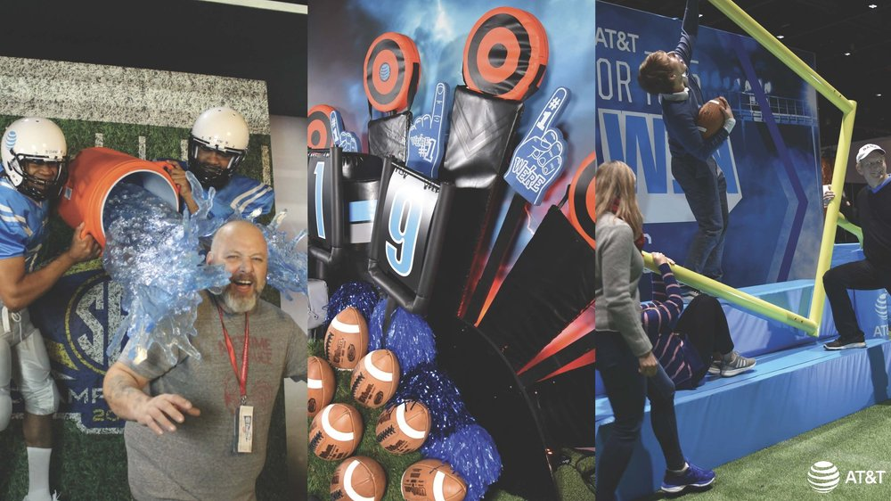
Activation Design
04 / 12
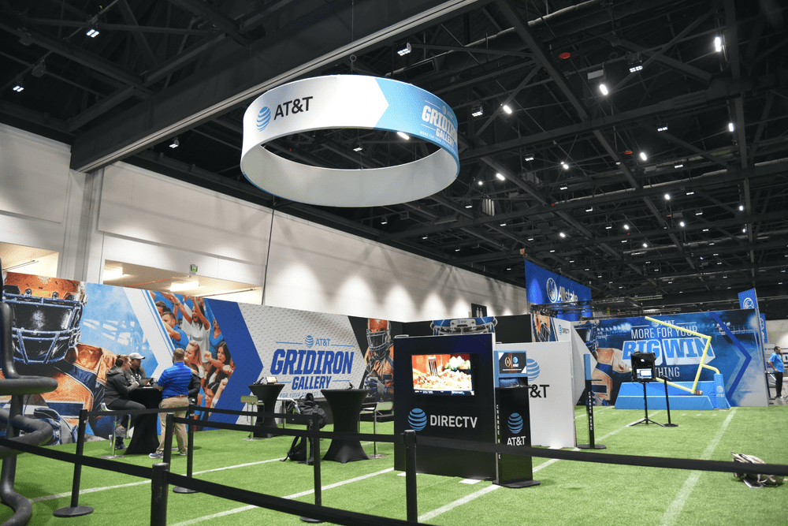
Environmental Graphics
05 / 12
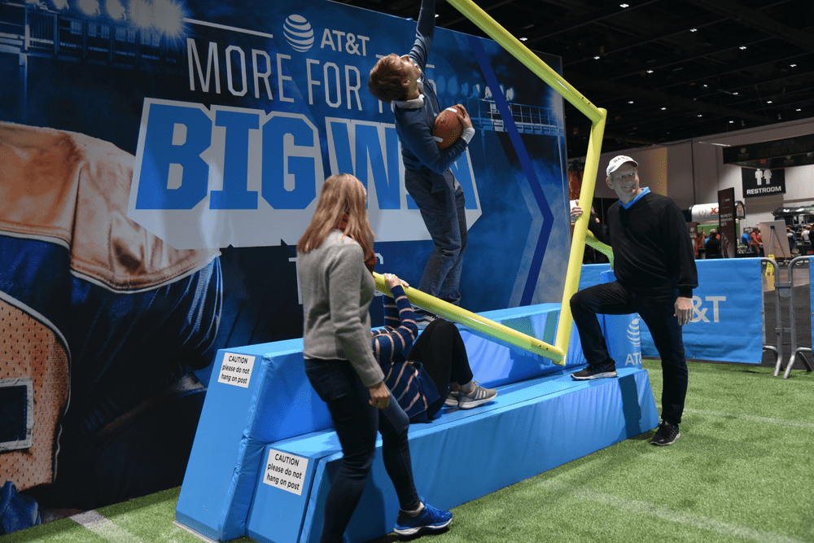
Spatial Design
06 / 12
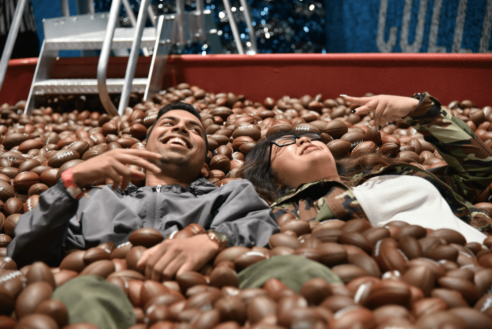
Experiential Detail
07 / 12
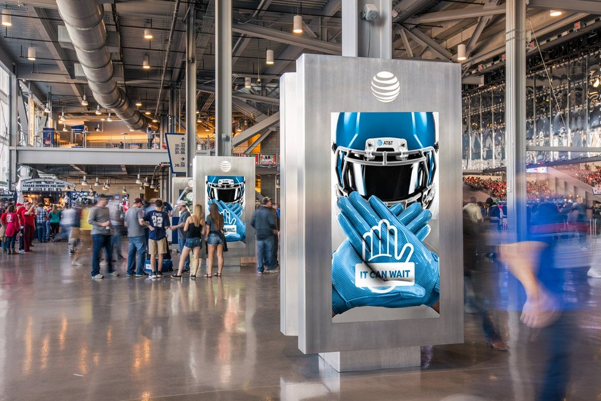
On-Site Branding
08 / 12
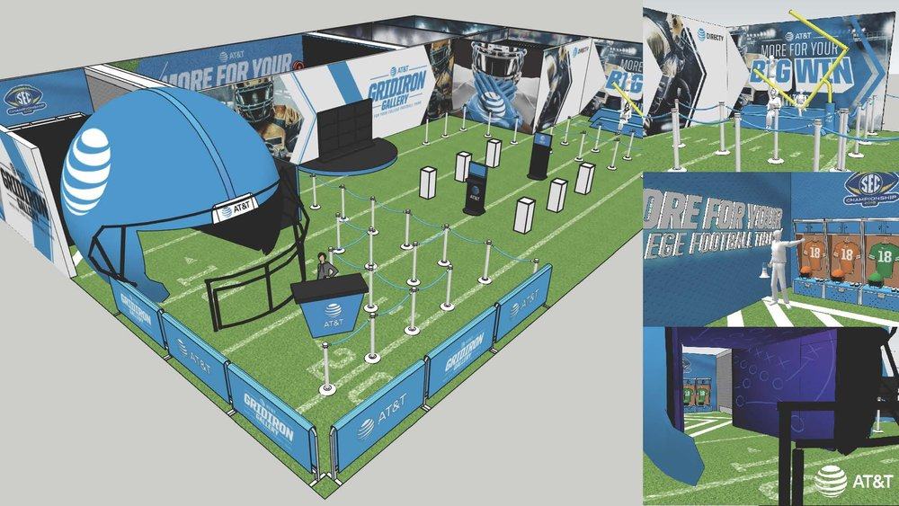
Art Direction
09 / 12
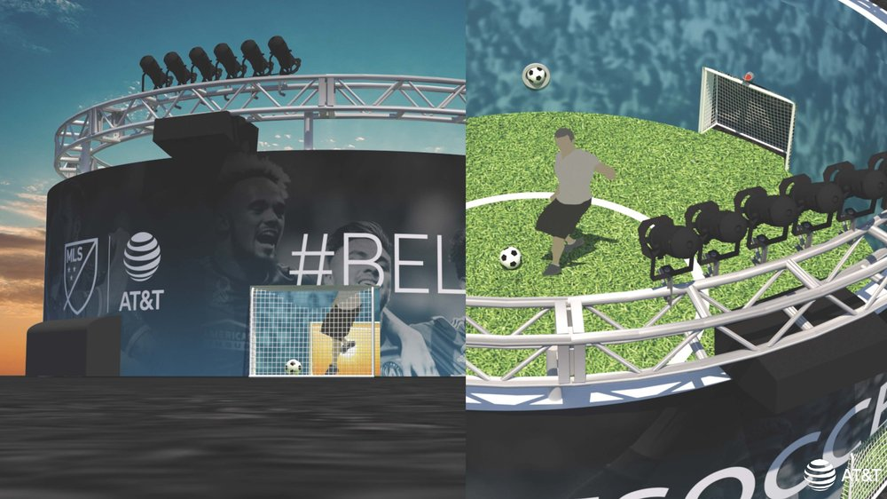
Campaign Moments
10 / 12
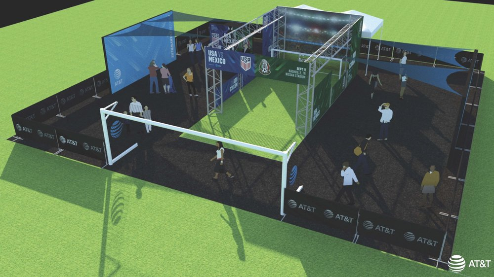
Brand Touchpoints
11 / 12
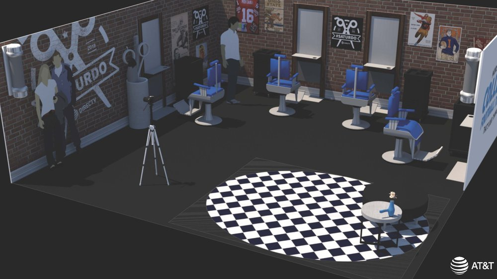
Full Campaign
12 / 12